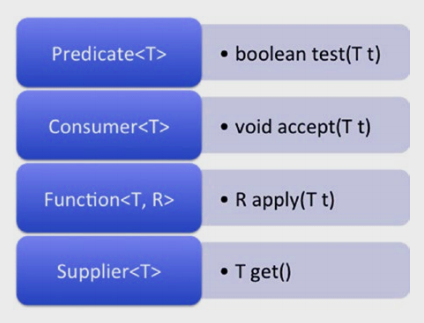
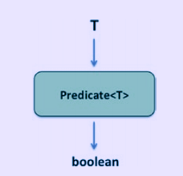
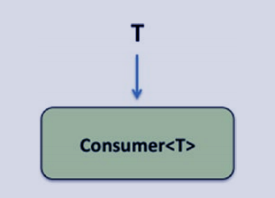
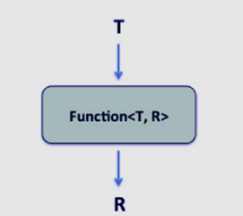
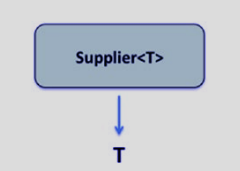

JAVA SE 8
Interfaces Funcionais Embutidas do Lambda
- Usar interfaces embutidas incluída no pacote java.util.function tal como Predicate, Consumer, Function, e Supplier
- Desenvolver código que usa versão primitiva de interfaces funcional
- Desenvolver codigo que usa versão binária de interfeces funcional
- Desenvolver código que usa a interface UnaryOperator
Nesta seção, vamos discutir quatro importantes interfaces embutida incluída no pacote java.util.function: Predicate, Consumer, Function e Suplier.
Predicate<T> -> Verifica uma condição e retorna como resultado um valor booleano. O uso comum é no metodo filter() em java.util.stream.Stream que é usado para remover elementos no fluxo que não coresponde a condição dada( isto é predicate) como argumento.
Consumer<T> -> Operação que leva um argumento mas retorna nada.
O Uso Comum é no método
forEach() em coleções e em java.util.stream.Stream; este método é usado para atravessar todos os elementos na coleção(collection) ou fluxo(stream).
Function<T ,R>-> Funções que leva um argumento e retorna um resultado.
O uso comum é No método map() em java.util.sream.Stream para transformar ou operar no valor passado e retorna um resultado.
Supplier<T>-> Operação que retorna um valor para o chamador( o valor retornado pode ser mesmo ou de diferentes valores)
O uso comum é no método generate em java.util.sream.Stream para criar um infinito stream de elementos.

Na imagem acima são declarações de métodos abstratos nas chaves de interfaces funcionais no pacote java.util.function.
A Interface Predicate
No código, muitas vezes precisamos usar funções que verificam uma condição e retornam um valor booleano. Considere o seguinte segmento de código:
Stream.of("hello", "world")
.filter(str -> str.startsWith("h"))
.forEach(System.out::println);
Este segmento de código apenas imprime "hello" no console. O método filter() só retorna true se a string passada começar com "h" e, portanto, "filtra" a string "world" do fluxo porque a string não inicia com "h". Nesse código, o método filter() usa um Predicate como argumento. Aqui está a interface PredicateFunctional:
@FunctionalInterface
public interface Predicate<T> {
boolean test(T t);
// outros métodos omitidos
}
O método abstrado nomeado test() que leva um argumento e retorna true ou false.

Um Predicate<T> pega um argumento do tipo T e retorna um valor booleano como resultado
Essa interface funcional também define os métodos padrão denominados and() e or() que usam um Predicate e retornam um Predicate. Esses métodos têm comportamento semelhante aos operadores && e || . O método negate() retorna um Predicate e seu comportamento é semelhante ao operador' ! '' . Como eles são úteis? Aqui está um programa que ilustra o uso do método and() na interface Predicate.
//PredicateTest.java
import java.util.function.Predicate;
public class PredicateTest {
public static void main(String []args) {
Predicate<String> nullCheck = arg -> arg != null;
Predicate<String> emptyCheck = arg -> arg.length() > 0;
Predicate<String> nullAndEmptyCheck = nullCheck.and(emptyCheck);
String helloStr = "hello";
System.out.println(nullAndEmptyCheck.test(helloStr));
String nullStr = null;
System.out.println(nullAndEmptyCheck.test(nullStr));
}
Este programa imprime:
true false
Neste programa, o objeto nullCheck é um Predicate que retorna true se o argumento String fornecido não for nulo. O predicate emptyCheck retorna true se a string especificada não estiver vazia. O predicate nullAndEmptyCheck combina os predicates nullCheck e emptyCheck fazendo uso do método padrão denominado and() fornecido no Predicate. Desde que helloStr aponta para a string “hello” na primeira chamada nullAndEmptyCheck.test(helloStr), e a string não está vazia, ela retorna true. No entanto, na próxima chamada, nullStr é null e, portanto, a chamada nullAndEmptyCheck.test(nullStr) retorna false.
Para dar outro exemplo para usar Predicates, aqui está um segmento de código que faz uso do método removeIf() método adicionado na interface Collection em Java 8:
//RemoveIfMethod.java
import java.util.List;
import java.util.ArrayList;
public class RemoveIfMethod {
public static void main(String []args) {
List<String> greeting = new ArrayList<>();
greeting.add("hello");
greeting.add("world");
greeting.removeIf(str -> !str.startsWith("h"));
greeting.forEach(System.out::println);
}
}
Imprime “hello” no console. O método padrão removeIf() definido na Interface Collection (uma super interface de ArrayList) usa um Predicate como argumento:
default boolean removeIf(Predicate<? super E> filter)
Na chamada para o método removeIf(), estamos passando uma expressão lambda que corresponde ao método booleano de teste abstrato test(T t) declarado na interface Predicate:
greeting.removeIf(str -> !str.startsWith("h"));
Como resultado, a string “world” da saudação do objeto ArrayList é removida e, portanto, apenas o “hello” é impresso no console. Neste código, usamos o operador!. Em vez disso, que tal usar o método equivalente negate() definido no Predicate? Sim, é possível e aqui está o código alterado:
greeting.removeIf(((Predicate<String>) str -> str.startsWith("h")).negate());
Quando você executa o programa na RemoveIfMethod do exemplo anterior com essa mudança, o programa imprime “hello”. Observe como executamos o tipo de conversão explícito (para o Predicate< String >) nessa expressão. Sem este tipo explícito convertido - como em ((str -> str.startsWith("h")).negate()) - o compilador não pode executar inferência de tipos para determinar a interface funcional correspondente e, portanto, reportará um erro.
A Interface Consumer
Existem muitos métodos que usam um argumento, executam algumas operações com base no argumento, mas não retornam nada para seus chamadores - eles são métodos do consumidor. Considere o seguinte segmento de código:
Stream.of("hello", "world")
.forEach(System.out::println);
Este segmento de código imprime as palavras “hello” e “world” que fazem parte do fluxo usando o método forEach() definido na interface Stream. Este método é declarado na interface java.util.stream.Stream da seguinte forma:
void forEach(Consumer<? super T> action);
O forEach() usa uma instância de Consumer como argumento. A interface funcional Consumer declara um método abstrato denominado accept().
@FunctionalInterface
public interface Consumer<T> {
void accept(T t);
// o método padrão andThen omitido
}

Um Consumer<T> leva um argumento do tipo T e retorna nada.
O método accept() "consome" um objeto e retorna nada(void)
.Aqui um exemplo:
Consumer<String> printUpperCase = str -> System.out.println(str.toUpperCase());
printUpperCase.accept("hello");
// prints: HELLO
Nesse código, a expressão lambda pega a string dada, converte em maiúscula e a imprime no console. Nós estamos passando o argumento atual “hello” para o método accept().
Agora, vamos voltar à discussão sobre forEach(): como funciona a chamada forEach(System.out::println)? A classe System possui uma variável estática denominada out que é do tipo PrintStream. A classe PrintStream define métodos println sobrecarregados; Um dos métodos sobrecarregados tem a assinatura void println(String). Na chamada forEach(System.out::println), estamos passando a referência do método para println, ou seja, System.out::println. Essa referência de método corresponde à assinatura do método abstrato na interface Consumer, ou seja, void accept(T). Portanto, a referência de método System.out::println serve para implementar a interface funcional Consumer e o código imprime as strings “hello” e “world” para o console. O exemplo, a seguir divide o código Stream.of ("hello", "world"). ForEach(System.out :: println); em três instruções diferentes apenas para mostrar como funciona.
//ConsumerUse.java
import java.util.stream.Stream;
import java.util.function.Consumer;
class ConsumerUse {
public static void main(String []args) {
Stream<String> strings = Stream.of("hello", "world");
Consumer<String> printString = System.out::println;
strings.forEach(printString);
}
}
Este programa imprime isto:
hello world
Consumer também tem um método padrão chamado andThen(); permite encadear chamadas para objetos de Consumer.
Function Interface
Considere este exemplo que faz uso do metódo map() na interface java.util.stream.Stream.
import java.util.Arrays;
public class FunctionUse {
public static void main(String []args) {
Arrays.stream("4, -9, 16".split(", "))
.map(Integer::parseInt)
.map(i -> (i < 0) ? -i : i)
.forEach(System.out::println);
}
}
Este programa imprime:
4 9 16
Este programa cria um fluxo de Strings dividindo a string “4, -9, 16”. A referência ao método Integer::parseInt é passada para o método map() - esta chamada retorna um objeto Integer para cada elemento no fluxo. Na segunda chamada ao método map() no fluxo, usamos a função lambda (i -> (i < 0) ? -i: i) para produzir uma lista de inteiros não negativos (alternativamente, poderíamos ter usado o Método Math::abs).
O método map() que usamos aqui toma uma Function como um argumento (este exemplo é para ilustrar onde uma interface Function é útil). Finalmente, os inteiros resultantes são impressos usando o método forEach().
A interface Function define um único método abstrato chamado apply() que recebe um argumento do tipo genérico T e retorna um objeto do tipo genérico R.
@FunctionalInterface
public interface Function<T, R> {
R apply(T t);
//outros métodos omitido
}

Uma Function<T,R> pega um argumento do tipo T e retorna do tipo R.
Aqui um simples exemplo que usa uma Function:
Function<String, Integer> strLength = str -> str.length();
System.out.println(strLength.apply("supercalifragilisticexpialidocious"));
// prints: 34
Este código pega uma string e retorna seu tamanho. Para a chamada, strLength.apply, passamos a string"supercalifragilisticexpialidocious". Como resultado de fazer a chamada apply(), obtemos o comprimento dessa string 34 como resultado
. Vamos mudar nosso programa anterior para usar o método andThen():
//CombineFunctions.java
import java.util.Arrays;
import java.util.function.Function;
public class CombineFunctions {
public static void main(String []args) {
Function<String, Integer> parseInt = Integer::parseInt;
Function<Integer, Integer> absInt = Math::abs;
Function<String, Integer> parseAndAbsInt = parseInt.andThen(absInt);
Arrays.stream("4, -9, 16".split(", "))
.map(parseAndAbsInt)
.forEach(System.out::println);
}
}
Este programa imprime 4, 9 e 16 em linhas separadas: a mesma saída do exemplo anterior, mas faz uma única chamada ao método map() no Stream. Como o Integer::parseInt() usa uma String como argumento, analisa-o para retornar um Integer, declaramos o método parseInt() do tipo Function<String, Integer>. O método Math::abs usa um inteiro e retorna um inteiro e, portanto, declaramos que ele é do tipo Function<Integer, Integer>. Como o parseAndAbsInt usa uma String como argumento e retorna um inteiro como resultado, nós o declaramos como sendo do tipo Function<String, Integer>.
Qual é a diferença entre os métodos andThen() e compose() na interface Function? O método andThen() aplica o argumento passado após chamar a função atual. O método compose() chama o argumento antes de chamar a função atual, como em:
Function<String, Integer> parseAndAbsInt = absInt.compose(parseInt):
A função identity() em Function apenas retorna o argumento passado sem fazer nada! Então qual é o seu uso? Às vezes é usado para testes - quando você escreve um trecho de código que pega uma função e quer verificar se ela funciona, você pode chamar identity() porque ela não faz nada. Aqui está um exemplo:
Arrays.stream("4, -9, 16".split(", "))
.map(Function.identity())
.forEach(System.out::println);
Nesse código, o map(Function.identity()) não faz nada; apenas passa os elementos no fluxo para a chamada forEach(System.out::println). Portanto, o código imprime os elementos como eles são, ou seja, os valores 4, -9 e 16 em linhas separadas.
A Interface Supplier
Nos programas, muitas vezes precisamos usar um método que não recebe nenhuma entrada, mas retorna alguma saída. Considere o seguinte programa que gera valores booleanos:
//GenerateBooleans.java
import java.util.stream.Stream;
import java.util.Random;
class GenerateBooleans {
public static void main(String []args) {
Random random = new Random();
Stream.generate(random::nextBoolean)
.limit(2)
.forEach(System.out::println);
}
}
Este programa imprime rondomicamente dois valores boolean, por exemplo "true" e "false". O método generate() na interface Stream é um membro estático que pega um suplier como um argumento:
static<T> Stream<T> generate(Supplier<T> s)
Aqui, você está passando a referência do método para nextBoolean definido na classe java.util.Random. Ele retorna um valor booleano escolhido aleatoriamente:
boolean nextBoolean()
Você pode passar a referência do método para nextBoolean ao método generate() do Stream porque corresponde o método abstrato na interface Supplier, ou seja, T get()
.
@FunctionalInterface
public interface Supplier<T> {
T get();
// sem outros métodos nesta interface
}

Um Supplier<T> não pega argumentos e retorna um valor do tipo T
.Aqui um exemplo que retorna um valor serm pegar qualquer argumento:
Supplier<String> currentDateTime = () -> LocalDateTime.now().toString(); System.out.println(currentDateTime.get());
Invocamos o método now() em java.time.LocalDateTime(). Quando nós executamos isto, imprimiu: 2018-10-16T12: 40: 55.164. Claro, se você tentar este código,você terá uma saída diferente. Aqui estamos usando um Supplier<String>. A expressão lambda não recebe nenhuma saída, mas retorna a data/hora atual como um formato String. Estamos chamando o lambda quando chamamos o método get() na variável currentDateTime.
Referência de Construtores
Considere o seguinte código:
Supplier<String> newString = String::new; System.out.println(newString.get()); // imprime uma string vazia (nada) no console e então um caracter na nova linha
Este código faz uso de referencia de construtores. Este código equivale para:
Supplier<String> newString = () -> new String(); System.out.println(newString.get());
Com uma referência de método usando ::new, esta expressão lambda é simplificada, como em String::new. Como usar construtores que recebem argumentos? Por exemplo, considere o construtor Integer(String): este construtor Integer usa uma String como argumento e cria um objeto Integer com o valor dado nessa string. Aqui está como você pode usar esse construtor:
Function<String, Integer> anotherInteger = Integer::new;
System.out.println(anotherInteger.apply("100"));
// este código imprime: 100
Não podemos usar um Supplier aqui porque os Suppliers não aceitam nenhum argumento. Funções aceitam argumentos e o tipo de retorno aqui é Integer e, portanto, podemos usar Function<String, Integer>.
Versões Primitiva de Interfaces Funcional
As interfaces integradas Predicate, Consumer, Function e Supplier operam em objetos do tipo de referência.
Para tipos primitivos, existem especializações disponíveis para int, long e tipo double para essas interfaces funcionais. Considere o Predicate que opera em objetos do tipo T, ou seja, é o Predicate<T>. As especializações para int, long e double para Predicate são IntPredicate, LongPredicate e DoublePredicate respectivamente.
Devido as limitações em genéricos, não é possível usar valores de tipo primitivos com as interfaces funcionais Predicate, Consumer, Function e Supplier. Mas você pode usar tipos de wrapper, como Integer e Double, com essas interfaces funcionais. Quando você tenta usar tipos primitivos com essas interfaces funcionais, isso resulta em autoboxing e unboxing implícitos, por exemplo, um valor int é convertido em um objeto Integer e vice-versa. Na verdade, muitas vezes você nem percebe que está usando os tipos de wrapper com essas interfaces funcionais. No entanto, o desempenho pode sofrer quando usamos os tipos de wrapper: pense em boxear e desempacotar alguns milhões de inteiros em um fluxo. Para evitar esse problema de desempenho, você pode usar versões primitivas relevantes dessas interfaces funcionais.
Versões primitivas da interface Predicate
Considere este exemplo:
IntStream.range(1, 10).filter(i -> (i % 2) == 0).forEach(System.out::println);
Aqui o método filter() pega um IntPredicte como um argumento desde que o stream subjacente é um IntStream. Aqui é o código equivalente que usa explicitamente um IntPredicate:
IntPredicate evenNums = i -> (i % 2) == 0; IntStream.range(1, 10).filter(evenNums).forEach(System.out::println);
Na Tabela lista de versões primitivas de interface Predicate fornecido no pacote java.util.function.
| Interface Funcional | Método abstrato | Breve Descrição |
|---|---|---|
| IntPredicate | boolean test(int value) | - Avalia a condição passada como int e retorna um valor booleano como resultado |
| LongPredicate | boolean test(long value) | - Avalia a condição passada por muito tempo e retorna um valor booleano como resultado |
| DoublePredicate | boolean test(double value) | - Avalia a condição passada como dupla eretorna um valor booleano como resultado |
Versões Primitivas da Interface Funcional
Aqui é um exemplo que usa um Stream com inteiros de tipo primitivo:
AtomicInteger ints = new AtomicInteger(0); Stream.generate(ints::incrementAndGet).limit(10).forEach(System.out::println); // imprime inteiros de 1 a 10 no console
Esse código chama o método int incrementAndGet() definido na classe java.util.concurrent.atomic.AtomicInteger. Note que este método retorna um int e não um Integer. Ainda assim, podemos usá-lo com o Stream por causa de autoboxing e unboxing implícitos para o tipo inteiro do wrapper de int. Este boxe e unboxing é simplesmente desnecessário. Em vez disso, você pode usar a interface IntStream; seu método generator() usa um IntSupplier como um argumento. Com essa mudança, aqui está o código equivalente:
AtomicInteger ints = new AtomicInteger(0); IntStream.generate(ints::incrementAndGet).limit(10).forEach(System.out::println); // imprime inteiros de 1 a 10 no console
Como seu código usa IntStream e o método generate() usa um IntSupplier, não há boxe e unboxing implícitos; portanto, esse código executa mais rápido, pois não gera objetos inteiros temporários desnecessários.
Para dar outro exemplo, aqui é um segmento de código que vimos anteriormente usando o método Math.abs():
Function<Integer, Integer> absInt = Math::abs;
Você pode substituí-lo por seu equivalente usando a especialização int para Function, conhecida como IntFunction:
IntFunction absInt = Math::abs;
Dependendo do tipo de argumentos e tipos de retorno, existem várias versões de tipos primitivos para interface Function
| Interface Funcional | Método Abstrato | Breve Descrição |
|---|---|---|
| IntFunction<R> | R apply(int value) | Opera no argumento int passado e retorna o valor do tipo genérico R |
| LongFunction<R> | R apply(long value) | Opera no argumento long passado e retorna o valor do tipo genérico R |
| DoubleFunction<R> | R apply(double value) | Opera no argumento double passado e retorna o valor do tipo genérico R |
| ToIntFunction<T> | int applyAsInt(T value) | Opera no argumento de tipo genérico passado T e retorna um valor int |
| ToLongFunction<T> | long applyAsLong(T value) | Opera no argumento de tipo genérico T passado e retorna um valor long |
| ToDoubleFunction<T> | double applyAsDouble(T value) | Opera no argumento de tipo genérico T passado e retorna um valor double |
| IntToLongFunction | long applyAsLong(int value) | Opera no argumento do tipo int passado e retorna um valor long |
| IntToDoubleFunction | double applyAsDouble(int value) | Opera no argumento de tipo int passado e retorna um valor double |
| LongToIntFunction | int applyAsInt(long value) | Opera no argumento de tipo longo passado e retorna um valor int |
| LongToDoubleFunction | double applyAsLong(long value) | Opera no argumento de tipo longo passado e retorna um valor double |
| DoubleToIntFunction | int applyAsInt(double value) | Opera no argumento de tipo double passado e retorna um valor int |
| DoubleToLongFunction | long applyAsLong(double value) | Opera no argumento do tipo double passado e retorna um valor long |
Versão Primitiva da Interface Consumer
Deendendo do tipo de argumento, existem numerosas versões de tipos primitivos disponível para interface Consumer.
Tabela abaixo de Versões primitivas da Interface Consumer:
| Interface Funcional | Método Abstrato | Breve Descrição |
|---|---|---|
| IntConsumer | void accept(int value) | Opera no argumento int dado e não retorna nada |
| LongConsumer | void accept(long value) | Opera no argumento long fornecido e não retorna nada |
| DoubleConsumer | void accept(double value) | Opera no argumento double fornecido e não retorna nada |
| ObjIntConsumer<T> | void accept(T t, int value) | Opera no argumento de tipo genérico dado argumentos T e int e não retorna nada |
| ObjLongConsumer<T> | void accept(T t, long value) | Opera no argumento de tipo genérico dado T e argumentos long e não retorna nada |
| ObjDoubleConsumer<T> | void accept(T t, double value) | Opera no argumento do tipo genérico dado T e argumentos double e não retorna nada |
Versões Primitivas da Interface Supplier
As versões primitivas de Supplier são BooleanSupplier, IntSupplier, LongSupplier e DoubleSupplier que retornam booleano, int, long e double respectivamente.
| Método Funcional | Método Abstrato | Breve Descrição |
|---|---|---|
| BooleanSupplier | boolean getAsBoolean() | Não Pega um argumento e retorna um valor boolean |
| IntSupplier | int getAsInt() | Não Pega um argumento e retorna um valor inttd> |
| LongSupplier | long getAsLong() | Não Pega um argumento e retorna um valor longtd> |
| DoubleSupplier | double getAsDouble() | Não Pega um argumento e retorna um valor doubletd> |
As versões primitivas das interfaces funcionais estão disponíveis apenas para int, long e double (e tipo booleano, além desses três tipos para Supplier). E se você precisar de uma interface funcional que obtenha ou retorne outros tipos primitivos char, byte ou short? Você tem que usar conversões implícitas para especializações int relevantes. Da mesma forma, quando você pode usar a especialização para o tipo double quando você está usando float.
Versões Binárias de Interfaces Funcional
Desenvolver códigos usando versões binárias de interfaces funcionais.
As interfaces funcionais Predicate, Consumer e Function possuem métodos abstratos que levam um argumento. Por exemplo, considere a interface funcional:
@FunctionalInterface
public interface Function<T, R> {
R apply(T t);
// outros métodos omitido
}
O método abstrato apply() aceita um argumento (tipo genérico T). Aqui está a versão binária da interface Function:
@FunctionalInterface
public interface BiFunction<T, U, R> {
R apply(T t, U u);
// outros métodos omitidos
}
Um BiFunction é semelhante ao Function, mas a diferença é que ele leva dois argumentos: ele pega argumentos dos tipos genéricos T e U e retorna um objeto do tipo genérico R. Você pode chamar o método apply() em um objeto BiFunction.
O prefixo “Bi” indica a versão que recebe “dois” argumentos. Na mesma linha que BiFunction para Function, há BiPredicate para Predicate e BiConsumer para Consumer que leva dois argumentos. E sobre o Supplier? Como o método abstrato em Supplier não aceita nenhum argumento, não há um BiSupplier equivalente disponível.
| Método Funcional | Método Abstrato | Breve Descrição |
|---|---|---|
| BiPredicate<T, U > | boolean test(T t, U u) | Verifica se o argumento corresponde a condicional e retorna um valor boolean como resultado. |
| BiConsumer<T, U > | void accept(T t, U u) | Operação que consome dois argumentos mas retorna nada |
| BiFunction<T, U, R > | R apply(T t, U u) | Function que pega dois argumentos e retorna um resultado. |